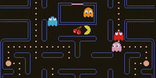

what i learned at positconf
Several weeks ago I attended #positconf in Seattle. I was super grateful to receive funding for my travel, stay, and registration from Posit as an Opportunity Scholar and now that I have had some time to reflect, I wanted to share some takeaways from the experience, in case they are beneficial to people who might be trying to decide whether to apply to go next year.
The Opportunity Scholar program is a really great way to diversify the attendees at the conference, but there is no point inviting people from under-represented communities to attend if you don’t also do the much more difficult work of creating a space where they feel welcome. I was really impressed with the work that the Posit team did both in the lead up and during the conference to ensure that it felt like a place where it was safe for everyone to learn.
My take home is that at a big conference like #positconf, inclusivity starts at the top. The conference kicked off with a keynote address and before he introduced the speakers, Hadley Wickham (the CEO of Posit) began by reminding everyone about the Code of Conduct that they had agreed to and making explicit all the different ways conference attendees could seek support if they experienced a code violation. He highlighted the importance of respecting personal space and invited everyone to grab a contact preference badge to wear on their lanyard, to give people a heads up about preferences for personal contact (i.e. hugs ok, handshake preferred, no touch). He told everyone about the spaces that were reserved at the conference for families, for mediation/prayer, for lactation, and where the gender-neutral toilets were. He also told everyone about the most important rule at #positconf, that is, the PacMan rule.

At big conferences, there are lots of times where you find yourself chatting with people while killing time between sessions. The PacMan rule suggests that you should mingle like a PacMan, with an open mouth, making it clear with your body language that you are open to anyone joining your conversation. By signalling that we should all stand in a way that invites people into our conversation, Hadley was also saying that it is ok to rock up to people you don’t know and join them. The Pacman rule makes people immediately feel much less nervous about navigating the social dynamics of a big tech conference.

While Hadley’s introductory remarks set the tone for the week, there were so many examples of other small actions that had a big impact. The Discord server was active for several days before the conference, providing a place for people to find their conference “crew” before they had even arrived. People used it to find others who liked TTRPG (I had to google what that was!), arranging to meet up the night before the conference for a game at the hotel. People used it to post where they were going for dinner, inviting anyone who was looking for a dinner option to join them. Posit Run club was popular; people met in the lobby to run before the conference each day. And there were channels for every industry and interest imaginable. The pets of Posit channel was the best! The result was a big conference that felt like a small community.
That small community feel created an environment where people really felt comfortable to bring their whole self. I saw presenters introduce themselves in Indigenous language, not because they are Indigenous, but as a way of paying respect to the peoples whose land they work on.

I saw evidence of this in presenters who told really vulnerable stories about the challenges they have encountered in navigating a career in data science. I saw presenters openly talking about neurodivergence, feeling safe to be honest about it as an important and relevant part of their identity (i.e. I am a data analyst and I am autistic). Lee Durbin has a great write up of his posit experience on his blog.
I saw presenters who talked about data collaboration using the analogy of “brewing” code and travelled to the conference with witch-related props (a cauldron, black hats, glitter and pompoms) to tell the story of how they brew code like you would a potion.

I am a developmental psychologist by training and #positconf2024 was my first non-academic conference. The vibe difference was really stark to me. At academic conferences, people are there to present the latest and greatest new thing they have done, mostly so that they can stake their claim to that thing. At #positconf2024, presenters are also there to show off the shiny new tool they have developed, but the goal is to give that thing away and/or to invite people to contribute to it. The goal is about collaboration, not competition. The culture is collective, not individualistic.
The networking at #positconf2024 also felt really different to other conferences I have been to. Academic conferences can be lonely. Attendees typically catch up with people they already know and there isn’t any downtime in the schedule or physical space allocated to connection. That is where #positconf2024 really shone. There were spaces that were engineered to make it easy to make new data friends. Birds of a Feather sessions gave people the opportunity to connect with people who work in similar industries. There was coffee and mingle time in the morning schedule, catering and place to sit and eat with others at lunch and mixers with drinks, games, and entertainment in the evening. It felt as if the community came first and the content second. Of course, Posit know that in open source, without community, there is nothing.